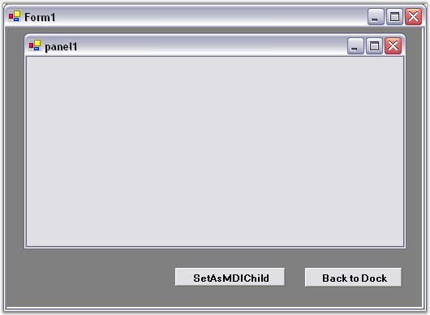
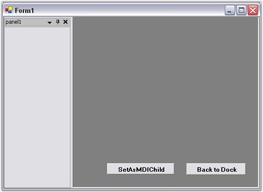
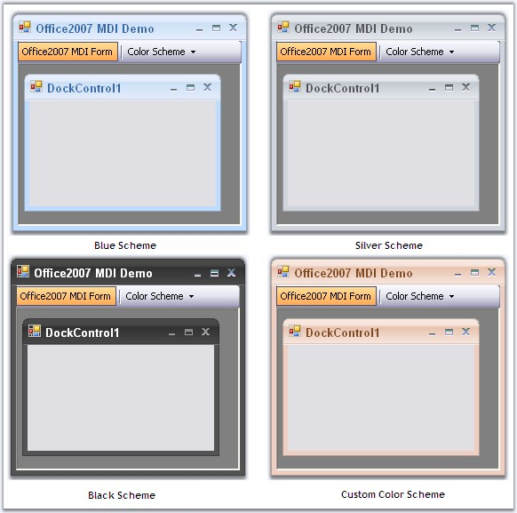

A docked control can be converted to an MDI child form and vice versa, using the code below.
1. Add the required syncfusion assembly references.
2. Declare and initialize the DockingManager and other controls.
3. Set the properties required and add the controls to the form. IsMdiContainer property of the form should be set to true.
4. Call the SetAsMDIChild method. This method will set the specified docked control as an MDI child.
|
Methods |
Description |
|
SetAsMDIChild |
Sets the control specified in Ctrl parameter as MDI child when bsetMDI is set to true. The parameter are,
Ctrl - Indicates the docked control. bsetMDI - Represents a Boolean value indicating true or false. |
|
SetAsMDIChild(Overloaded) |
Sets the specified docked control as MDI child with the new size provided using the Layout parameter.
Ctrl - Indicates the docked control. bsetMDI - Represents a Boolean value indicating true or false. Layout - Stores a set of four integers that represents the location and size of a rectangle. |
|
[C#]
private void button1_Click(object sender, System.EventArgs e) { //Sets the panel1 as child form for the MDI form this.dockingManager1.SetAsMDIChild(this.panel1,true); } private void button2_Click(object sender, System.EventArgs e) { //Sets the MDI child form to the normal Docking window. this.dockingManager1.SetAsMDIChild(this.panel1,false); }
//Overloaded private void button1_Click(object sender, System.EventArgs e) { //Sets the panel1 as child form for the MDI form this.dockingManager1.SetAsMDIChild(listBox1,true, new Rectangle(200,400,500,300)); } private void button2_Click(object sender, System.EventArgs e) { //Sets the MDI child form to the normal Docking window. this.dockingManager1.SetAsMDIChild(listBox1,true, new Rectangle(200,400,500,300)); }
|
|
[VB.NET]
Private Sub button1_Click(ByVal sender As Object, ByVal e As System.EventArgs) Handles button1.Click 'Sets the panel1 as child form for the MDI form Me.dockingManager1.SetAsMDIChild(Me.panel1,True) End Sub
Private Sub button2_Click(ByVal sender As Object, ByVal e As System.EventArgs) Handles button2.Click 'Sets the MDI child form to the normal Docking window. Me.dockingManager1.SetAsMDIChild(Me.panel1,False) End Sub
''Overloaded Private Sub button1_Click(ByVal sender As Object, ByVal e As System.EventArgs) Handles button1.Click 'Sets the panel1 as child form for the MDI form Me.dockingManager1.SetAsMDIChild(listBox1,True, New Rectangle(200,400,500,300)) End Sub
Private Sub button2_Click(ByVal sender As Object, ByVal e As System.EventArgs) Handles button2.Click 'Sets the MDI child form to the normal Docking window. Me.dockingManager1.SetAsMDIChild(listBox1,True, New Rectangle(200,400,500,300)) End Sub |
5. Run the application, click the buttons and see the respective transitions.

Figure 95: Docked Window transformed into MDI Child Window

Figure 96: MDI Child window transformed into Docked Window
 Note: You can set the docked control as an
MDI Child in an easy method, by using the "MDI Child" option in the
Note: You can set the docked control as an
MDI Child in an easy method, by using the "MDI Child" option in the
A sample which demonstrates MDI child transition is available in the below sample installation path.
..My Documents\Syncfusion\EssentialStudio\Version Number\Windows\Tools.Windows\Samples\2.0\Docking Package\MDIDemo
Office 2007 Style for MDI Child Form
The MDI child forms can have Office2007 look and feel. It can be enabled through Office2007MdiChildForm property. Color schemes are also supported which can be specified using Office2007MdiColorScheme property.
|
[C#]
this.dockingManager1.Office2007MdiChildForm = true;
//Sets the Blue Color scheme. this.dockingManager1.Office2007MdiColorScheme = Office2007Theme.Blue; |
|
[VB.NET]
Me.dockingManager1.Office2007MdiChildForm = True
'Sets the Blue Color scheme. Me.dockingManager1.Office2007MdiColorScheme = Office2007Theme.Blue |

Figure 97: Office 2007 Color Schemes for MDI Child Form
See Also
How to avoid flickering while creating MDI child form?, How to detect whether a particular control is in MDI mode or not?